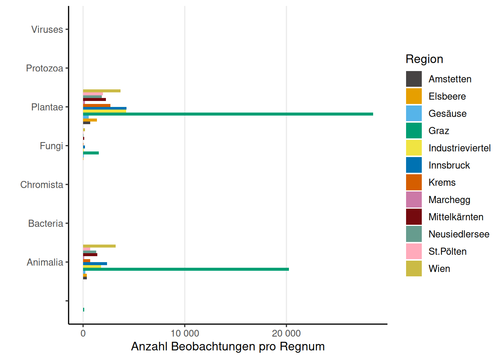

City Nature Challenges in Österreich, 25.-28. April 2025
- https://www.citynaturechallenge.at/
- inaturalist.org/projects/city-nature-challenges-in-oesterreich-2025
Indizes zwischen den Regionen
Beobachtungen Regnum (iNaturalist)

Allgemeine Information
Insgesamt wurden 222 Beobachtungen von 25 Beobachterinnen und Beobachtern hochgeladen. Das ergibt einen Mittelwert von 8.9 Beobachtungen pro Beobachter bzw. Beobachterin und einen Median von 1. Auf Spezies-Ebene wurden 104 Beobachtungen hochgeladen.


Beobachtungskarte
Fun Facts
User (auch bekannt als Birder) NA hat NA Vogelbeobachtungen hochgeladen - mehr als jede/r andere. Besonders liebt der User bzw. die Userin Hannes Oberreiter die Art Nuctenea umbratica, die er/sie bereits 5 Mal hochgeladen hat. Das Taxon mit dem längsten Namen ist Lamiastrum galeobdolon subsp. argentatum, das 40 Zeichen lang ist.
Top Beobachter/innen
In dieser Liste werden auch doppelte Beobachtungen gezählt, jedoch sollte dies nicht als Tipp betrachtet werden, um an erster Stelle zu stehen.
Top Bestimmer/Innen (iNaturalist)
Die erhobenen Beobachtungen werden erst durch die unerschöpfliche Arbeit der Bestimmer/innen zu wertvollen Daten. An dieser Stelle ein großes Dankeschön an alle Bestimmer/innen ohne euch wäre iNaturalist nicht das, was es heute ist.
Top Beobachter/innen mit den meisten unterschiedlichen Arten
Nur Beobachtungen zumindest auf Spezies-Ebene und Research-Grade oder positiven Validierung Status werden gezählt.
Top Taxa (Spezies-Ebene)
In dieser Liste sind die am häufigsten beobachteten Taxa auf Spezies-Ebene aufgeführt, die bereits identifiziert wurden.
Unique Taxa mit Research-Grade
Besonders erfreulich sind natürlich immer einzigartige Funde, die nur von einer Person in der Challenge hochgeladen wurden.
Raritäten (observation.org)
Observation.org hat eine eigene Einteilung in Seltenheiten, die sich von der iNaturalist-Einteilung unterscheidet. Die Einteilung ist wie folgt:

Beobachtungen mit Rarität “selten” (observation.org)
Die Beobachtungen mit Rarität “selten” sind in der Liste unten aufgeführt.
Beobachtungs Qualität (iNaturalist)
iNaturalist unterteilt die Beobachtungsqualität in drei Kategorien. Die Kategorie “causal” umfasst Beobachtungen, bei denen mindestens eines der folgenden Elemente fehlt: das Datum der Beobachtung, der Beobachtungsort oder ein Foto (oder Tonaufnahme). Die Kategorie “needs_id” wird angezeigt, bis mindestens zwei Personen eine Spezies für diesen Upload einstimmig bestimmt haben, ohne Widerspruch. Die letzte und wertvollste Kategorie ist “research”, die bestätigte Beobachtungen auf Spezies-Ebene umfasst.

Beobachtungen Phylum (iNaturalist)

Insecta - Ordnungen (iNaturalist)

Beobachtungen mit Konflikt Bestimmungen (iNaturalist)
Verifizierung Status (observation.org)
Observation.org unterteilt die Beobachtungen in unterschiedliche Validierung Status.

Beobachtungen die nicht Verizifiert werden können (observation.org)
Hier werden alle Beobachtungen angezeigt die nicht Verizifiert werden können oder nicht genehmigt wurden, auf observation.org.